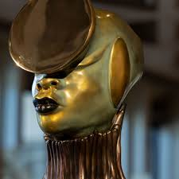
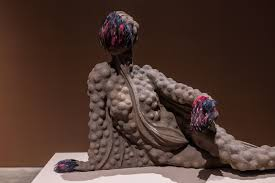
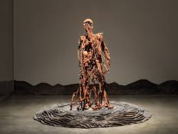

Kenya · USA
Wangechi Mutu
Visual Artist — Collage, Sculpture & Installation
Born in Nairobi, Kenya, Wangechi Mutu creates collages, sculptures, and large-scale installations that weave together bodies, nature, and technology into surreal new forms — interrogating how African women are seen, and reimagining what they can become. Her bronze figures for the Metropolitan Museum of Art marked a historic moment for African art on the world stage.
Artist in Her Own Words

Artist Interview
Wangechi Mutu — The Met Commission
Artist Statement
When the Metropolitan Museum approached me about placing sculptures in the niches on the facade — spaces that had been empty since the museum was built — I felt the weight of what that meant. Caryatids throughout history have carried buildings, expressing the might and wealth of a particular place. In Greek architecture, women in beautiful robes. In African sculpture across the continent, women kneeling or sitting, sometimes holding a child, holding up the seat of the king.
"I wanted to keep the DNA of the woman in an active pose, but I didn't want her to carry the weight of something or someone else."
The process of taking a drawing into three dimensions at that scale was epic. Once the molds were produced I worked hard to individualize everything that expresses humanity — the patinas, the painting, the firing. They had to be alive because they were going to be in front of all those people.
On material and meaning
I created coils that wrap all the way around the bodies — tactile and living and fleshy, but at the same time protecting the women, giving them privacy and a regal nature. They became almost like soldiers in armour. The circular forms come from traditional African adornment — Ethiopian, Sudanese tribes with incredible lip plates, mostly worn by women of status. I turned them into mirrors. They take light and twist it around, they flash at you from a distance.
Women's bodies are always at the front of so much of the expression, the hostility, the magnificence of how humankind sees itself. I think of these women as characters that have the capacity, the freedom, and the opportunity to be where they need to be, to say what they have to say. They're here and they're present and they've arrived.
Interview transcript
Full Transcript
Wangechi Mutu: My name is Wangechi Mutu. I'm a visual artist born in Kenya and Nairobi.
I feel like this particular commission of asking a contemporary artist to place something in these niches and the facade of the Metropolitan, for me is one of the most proactive moves that a museum can make at this particular moment. The space has been empty since the museum was built.
When the Met approached me about this idea, I was actually looking at caryatids. Caryatids throughout history have carried these buildings to express the might and the wealth of a particular place. In Greek architecture, you see these women in their beautiful robes, and then in African sculpture across the continent, you see these women either kneeling or sitting, sometimes holding a child as well as holding up the seat of the king.
It felt like this was a very ubiquitous position for women across many, many histories. How do I use this figure to change this conversation and this issue? I wanted to keep the DNA of the woman in an active pose, but I didn't want her to carry the weight of something or someone else.
The process of taking it from drawing into 3D has been quite epic. Once these molds had been produced in a much larger scale, I really worked hard to individualize everything that really expresses humanity to us. After they had been cast in bronze, I went into work on the patinas, and that's when I was going to have to go in and paint them and fire and really make them alive, because they're going to be in front of all of these people.
I wanted these things to be about how form and material actually impacts us. How they look is very much about what they mean. I've created these coils that I've put all the way around their body that felt tactile and living and fleshy, but at the same time really protected the women and gave them kind of a privacy and a regal nature. They became almost like soldiers, like they were in armor.
And the circular form actually comes from traditional African adornment, Ethiopian, Sudanese tribes that have these incredible lip plates. They're mostly worn by women of status. So I've turned them into mirrors, they're able to take light and twist it around, they're able to flash at you from a distance.
Women's bodies are always at the front of so much of the expression, the hostility, the magnificence of how humankind sees itself. I think of these women as characters that have the capacity, the freedom, and the opportunity to be where they need to be to say what they have to say. They're here and they're present and they've arrived.
Selected Works

The Seated IV
2019
Bronze — one of four large-scale figures installed in the niches of the Metropolitan Museum of Art's Fifth Avenue facade. A female figure seated in a powerful upright posture, body wrapped in coiling forms that reference both armour and traditional African adornment.

Yo Mama
2003
Cut-and-pasted printed paper and acrylic on mylar — 152 × 121 cm. A hybrid female figure constructed from magazine fragments, botanical illustrations, and body parts. The collaged form is simultaneously beautiful and unsettling, composed of images of African and Western origin that have been cut apart and reassembled into something new.

In Two Minds
2005
Ink, acrylic, collage on mylar — 184 × 130 cm. A large vertical composition in which a central figure seems to split — one half reaching upward, one half rooted downward. The surface combines ink drawing with collaged elements sourced from fashion magazines and natural history publications.